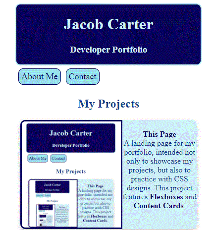

Languages

C++

C#

Python

HTML5

CSS

Javascript
Jacob Carter
Developer Portfolio

My Projects

This Page
A landing page for my portfolio, intended not only to showcase my projects, but also to practice with CSS designs. This project currently features: Flexboxes and Content Cards.
A landing page for my portfolio, intended not only to showcase my projects, but also to practice with CSS designs. This project currently features: Flexboxes and Content Cards.
Diablo 2 Infosheet
An interactive website for the game Diablo 2, which gives a lot of useful information players may need to have access to on the fly. This project features: Flexboxes, Javascript, and Mobile-Friendly Design.
An interactive website for the game Diablo 2, which gives a lot of useful information players may need to have access to on the fly. This project features: Flexboxes, Javascript, and Mobile-Friendly Design.

Starbucks Drink Randomizer
A simple website designed to randomly generate a Starbucks beverage. I made this to help train new baristas on the register system.
This project features: Javascript and Object-Oriented Design.
A simple website designed to randomly generate a Starbucks beverage. I made this to help train new baristas on the register system.
This project features: Javascript and Object-Oriented Design.